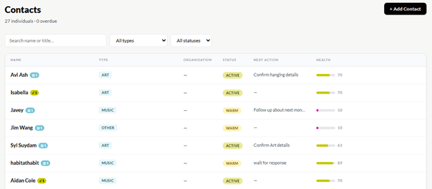
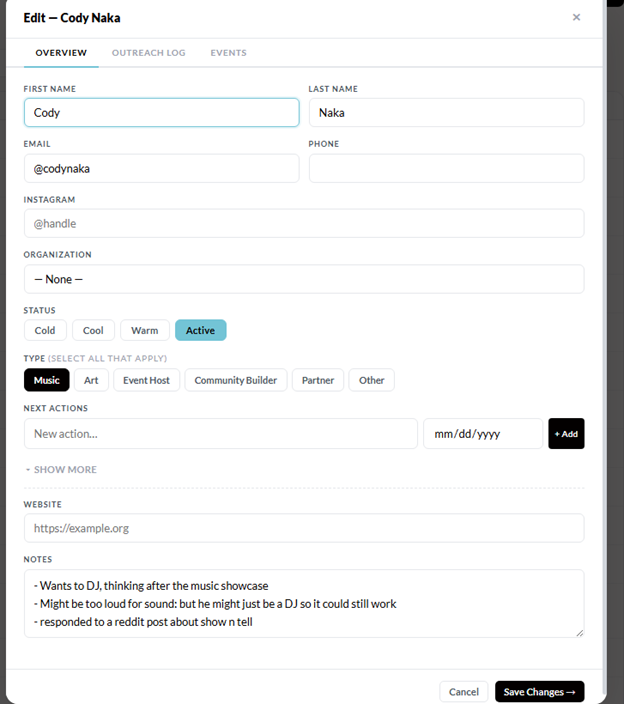
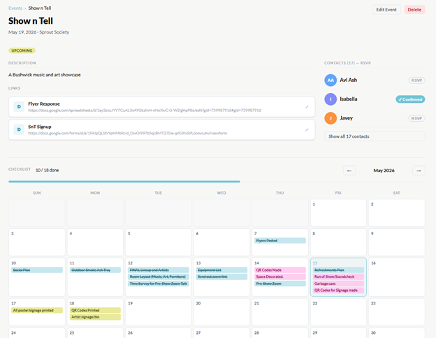
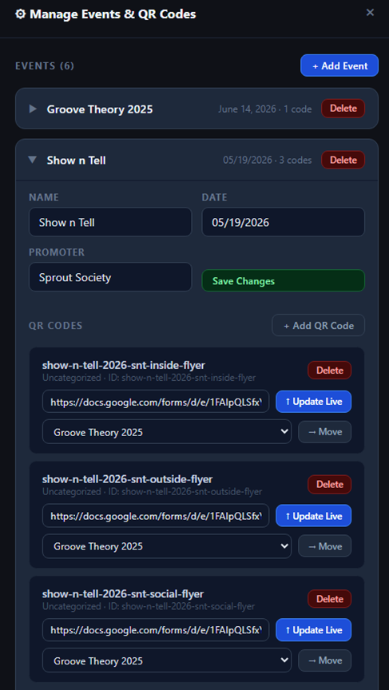

Vibe coder & low-code developer focused on AI-powered internal tools.
I take real problems — the kind that live in spreadsheets and email threads —
and turn them into fast, functional software.
A full internal toolset built for a non-profit arts organization — replacing
scattered spreadsheets and manual workflows with purpose-built, AI-assisted software.
Three tools, one Supabase backend, all deployed and actively used.
Next.jsSupabaseClaude APIVercelCanva MCP
Sprout CRM
Live · Actively Used
A relationship management tool built for a non-profit that runs and partners on
community events. Tracks contacts, events, and communication workflows — with
Claude integration to research and generate contact profiles that import directly
into the tool via JSON upload.



Grant Finder & Writer
MVP
A workspace for tracking grant applications end-to-end — from discovery to
submission. Uses Claude externally to research opportunities and generate structured
grant profiles that upload into the tool, then provides a writing workspace to
complete each application.
Other Projects
QR Scan Tracker
A lightweight tool for creating dynamic QR codes and tracking scan data in real time.
Used for RSVP links on concert flyers and non-profit event marketing — letting you
see which flyers, in which locations, drive the most engagement.
Cloudflare WorkersPlain HTMLDynamic QRAnalytics
Personal use
Concert flyers with per-show RSVP QR codes — scan data shows how many people
engaged with each flyer run.
Non-profit use
Event marketing across multiple locations — compare scan rates by neighborhood
to optimize where flyers get posted.

In the Lab
Experiments
Not everything is finished. Here's what I'm actively building and learning from.
Music Composition Assistant
In Development
An AI agent for planning, researching, and tracking the music composition process.
The goal is a tool that's genuinely useful at a creative workbench — not just a
chatbot wrapper. Currently running structured experiments to find what actually helps
composers think better.
Claude APIAgent ArchitectureActive Research
Tools & Stack
How I build
AI & Agents
Claude API
Claude Code (MCP)
Canva MCP
JSON profile workflows
Frontend & Deploy
Next.js
Tailwind CSS
Vercel
Cloudflare Workers
Data & Backend
Supabase (PostgreSQL)
Social platform APIs
REST / JSON
Let's work together
Get in touch
I'm looking for vibe coding and low-code development roles.
If you're building internal tools, AI workflows, or anything that solves
a real problem for a real team — let's talk.